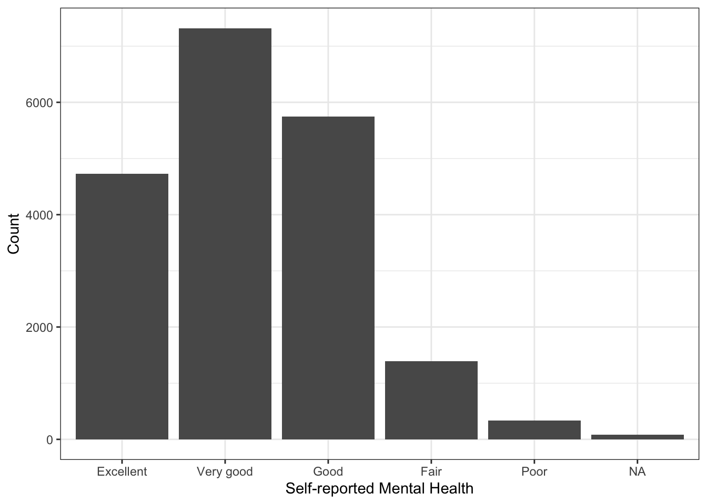
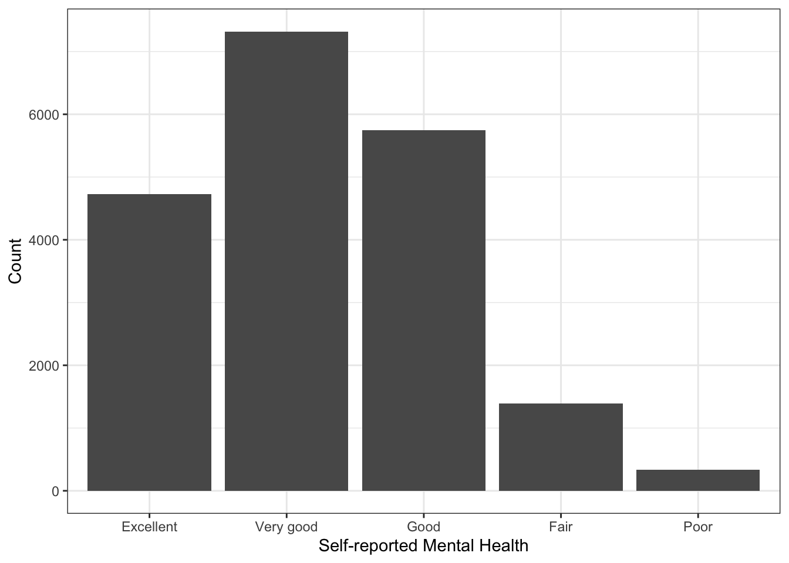
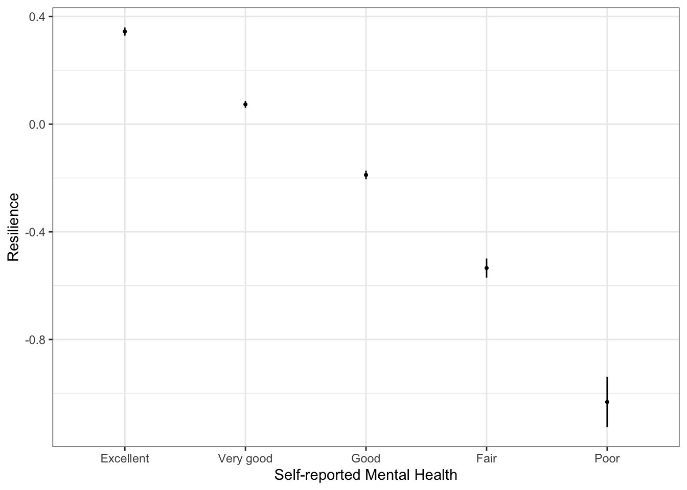
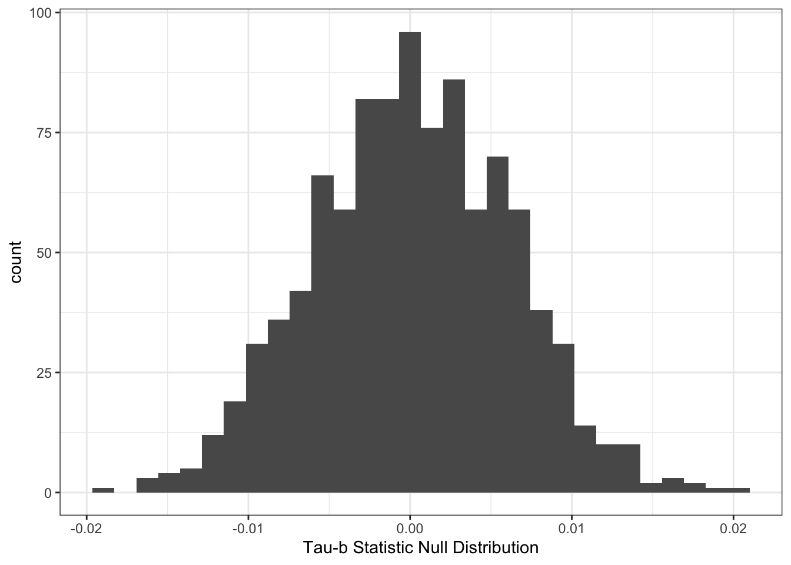
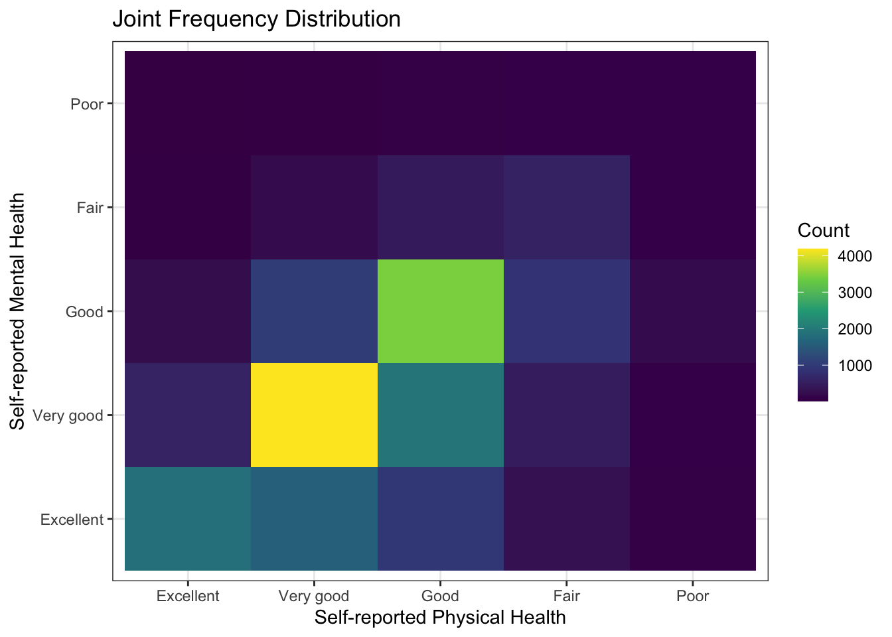
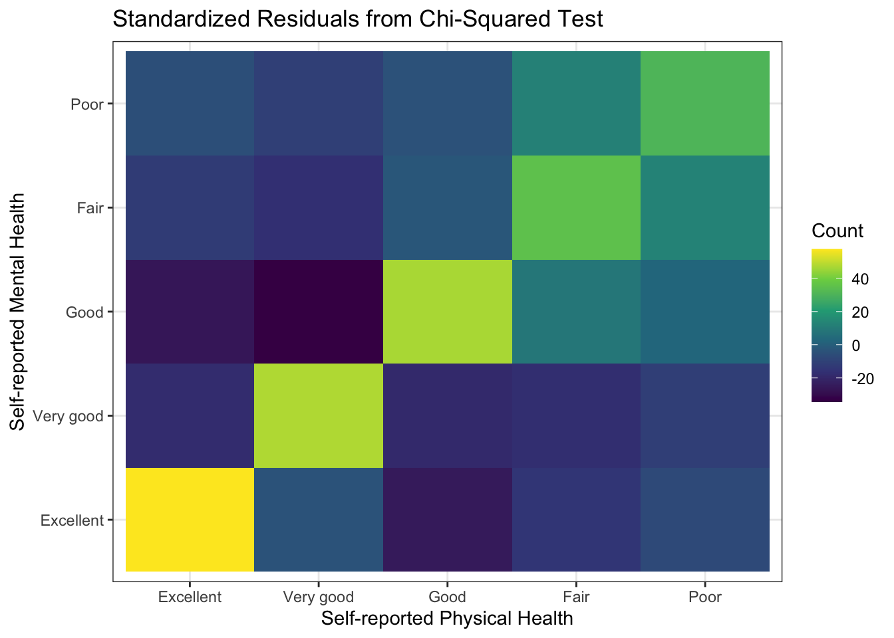
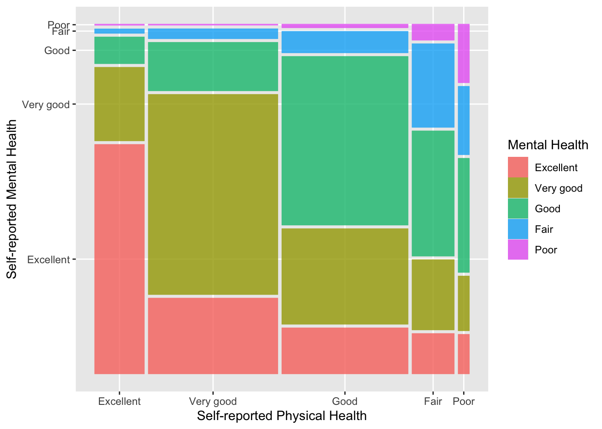

Chapter 2 Describing Relationships in the General Social Survey
Sometimes we want numerical rather than visual depictions of relationships and the simplest form those take is descriptive statistics. Below, I discuss some of the tools we can use to summarize and describe (mostly bivariate) relationships in data.
2.1 The Canadian GSS.
We are going to use the Canadian General Social Survey (Cycle 30: Canadians at Work and Home). The codebook would be too big to display in the file, but you can download it here. In particular, we are going to look at relationships between self-reported mental health (SRH_115) and some other variables. First, we’ll have to load the data.
2.2 Looking at the data.
After loding the data, we could make a frequency distribution of the variable of interest. There are loads of ways to do this. We’ll use the one in my package DAMisc first. There are lots of variables that have labels, so rather than using the factorize() function on each one, we’ll just do it to the whole dataset.
Now, we’ve got two copies of the data - one with factors (gss2016canf) and one with all numeric data (gss2016can). This may come in handy a bit later.
## $tab
## $tab[[1]]
## Var1 Freq
## Excellent 24% (4,728)
## Very good 37% (7,319)
## Good 29% (5,746)
## Fair 7% (1,393)
## Poor 2% (336)
## Total 100% (19,522)
##
##
## $chisq
## NULL
##
## $stats
## list()
##
## attr(,"class")
## [1] "xt"You Try It!
We’re going to use the 2016 US General Social Survey for exercises in this section. You can load the data with:
Look at the distribution of two variables we’re going to consider - aidhouse (the government should provide housing to the poor) and partyid (partisan identification).
- For now, just look at the univariate distributions.
Note that most people estimated their mental health to be “Excellent” or “Very Good”. Just as before, we could make a bar plot of this as well:
library(ggplot2)
ggplot(gss2016canf, aes(x=SRH_115)) +
geom_bar() +
theme_bw() +
labs(x="Self-reported Mental Health",
y="Count")
Note in the plot above that the missing value (NA) is represented. If we don’t want that to be the case, we simply filter them out:
library(dplyr)
gss2016canf %>%
filter(!is.na(SRH_115)) %>%
ggplot(aes(x=SRH_115)) +
geom_bar() +
theme_bw() +
labs(x="Self-reported Mental Health",
y="Count")
There is a variable called resilience in the data that is a scale of a bunch of questions about personal resilience. They are most of the RES_X questions in the codebook, except for RES_09, which was not interestingly correlated with the other variables. We could look to see how that variable changes as a function of self-reported mental health. One way of doing this would be to summarise resilience by SRH_115. We can do this with the sumStats() function in the DAMisc package:
You Try It!
Make a bar plot of aidhouse and of partyid, each independently.
## # A tibble: 6 × 12
## variable SRH_115 mean sd iqr min q25 q50 q75 max n nNA
## <chr> <fct> <dbl> <dbl> <dbl> <dbl> <dbl> <dbl> <dbl> <dbl> <int> <int>
## 1 resilience Excellent 0.344 0.530 0.778 -3.44 -0.0132 0.387 0.764 1.11 4728 8
## 2 resilience Very good 0.0735 0.537 0.770 -3.73 -0.278 0.0976 0.492 1.20 7319 9
## 3 resilience Good -0.189 0.614 0.792 -3.73 -0.558 -0.158 0.234 1.12 5746 10
## 4 resilience Fair -0.535 0.674 0.940 -3.35 -0.977 -0.543 -0.0371 1.03 1393 2
## 5 resilience Poor -1.03 0.869 1.03 -3.73 -1.55 -1.01 -0.519 1.03 336 2
## 6 resilience <NA> -0.410 0.984 1.03 -3.00 -0.883 -0.152 0.148 1.03 87 56This gives many of the “usual suspects” in terms of summary statistics. If you wanted to make the same sort of summary, but visually (say means and \(95\%\) confidence intervals), you could do that with ggplot():
gss2016canf %>% filter(!is.na(SRH_115)) %>%
ggplot(aes(x=SRH_115, y=resilience)) +
stat_summary(geom="errorbar", fun.data=mean_cl_normal,
width=0, conf.int=0.95) +
stat_summary(geom="point", fun=mean, size=.75) +
theme_bw() +
labs(x="Self-reported Mental Health",
y="Resilience")
The stat_summary() function calculates the confidence bounds and means and returns them to the appropriate aesthetics (y.min and y.max, in this case). In this case, because none of the confidence intervals overlap that resilience is statistically different across all categories.
You Try It!
Make a similar graph for realinc as a function of aidhouse from the US GSS data.
2.2.1 Cross-tabulations
One of the main tools we use for descriptive analysis is the cross-tabulation (aka joint frequency distribution, contingency table). There are loads of ways to do these in R. Which one you use really depends on what exactly you want to see and the flexibility in the output format. The CrossTable() function in the gmodels package provides lots of information and is quite customizable in what it presents. Here’s an example of self-reported mental health (SRH_115) on self-reported physical health (SRH_110).
##
##
## Cell Contents
## |-------------------------|
## | N |
## | Chi-square contribution |
## | N / Row Total |
## | N / Col Total |
## | N / Table Total |
## |-------------------------|
##
##
## Total Observations in Table: 19506
##
##
## | gss2016canf$SRH_110
## gss2016canf$SRH_115 | Excellent | Very good | Good | Fair | Poor | Row Total |
## --------------------|-----------|-----------|-----------|-----------|-----------|-----------|
## Excellent | 1845 | 1588 | 942 | 277 | 73 | 4725 |
## | 2161.995 | 7.879 | 310.573 | 140.310 | 39.298 | |
## | 0.390 | 0.336 | 0.199 | 0.059 | 0.015 | 0.242 |
## | 0.682 | 0.226 | 0.137 | 0.121 | 0.118 | |
## | 0.095 | 0.081 | 0.048 | 0.014 | 0.004 | |
## --------------------|-----------|-----------|-----------|-----------|-----------|-----------|
## Very good | 593 | 4187 | 1951 | 481 | 101 | 7313 |
## | 174.634 | 910.892 | 148.777 | 167.828 | 73.722 | |
## | 0.081 | 0.573 | 0.267 | 0.066 | 0.014 | 0.375 |
## | 0.219 | 0.595 | 0.285 | 0.209 | 0.163 | |
## | 0.030 | 0.215 | 0.100 | 0.025 | 0.005 | |
## --------------------|-----------|-----------|-----------|-----------|-----------|-----------|
## Good | 217 | 1019 | 3439 | 856 | 210 | 5741 |
## | 421.009 | 533.809 | 1002.572 | 47.897 | 4.344 | |
## | 0.038 | 0.177 | 0.599 | 0.149 | 0.037 | 0.294 |
## | 0.080 | 0.145 | 0.502 | 0.373 | 0.340 | |
## | 0.011 | 0.052 | 0.176 | 0.044 | 0.011 | |
## --------------------|-----------|-----------|-----------|-----------|-----------|-----------|
## Fair | 38 | 213 | 442 | 572 | 126 | 1391 |
## | 124.315 | 166.052 | 4.462 | 1017.235 | 152.312 | |
## | 0.027 | 0.153 | 0.318 | 0.411 | 0.091 | 0.071 |
## | 0.014 | 0.030 | 0.064 | 0.249 | 0.204 | |
## | 0.002 | 0.011 | 0.023 | 0.029 | 0.006 | |
## --------------------|-----------|-----------|-----------|-----------|-----------|-----------|
## Poor | 11 | 27 | 79 | 111 | 108 | 336 |
## | 27.175 | 73.181 | 12.915 | 128.964 | 890.336 | |
## | 0.033 | 0.080 | 0.235 | 0.330 | 0.321 | 0.017 |
## | 0.004 | 0.004 | 0.012 | 0.048 | 0.175 | |
## | 0.001 | 0.001 | 0.004 | 0.006 | 0.006 | |
## --------------------|-----------|-----------|-----------|-----------|-----------|-----------|
## Column Total | 2704 | 7034 | 6853 | 2297 | 618 | 19506 |
## | 0.139 | 0.361 | 0.351 | 0.118 | 0.032 | |
## --------------------|-----------|-----------|-----------|-----------|-----------|-----------|
##
## Note that some of these things we may not want to see. We could turn off the row proportions prop.r=FALSE and the cell proportions prop.t=FALSE and we could turn off the \(\chi^2\) contribution prop.chisq=FALSE. We could also turn on the \(\chi^2\) statistic with
CrossTable(x = gss2016canf$SRH_115, gss2016canf$SRH_110,
prop.r=FALSE, prop.t=FALSE,
prop.chisq=FALSE, chisq = TRUE)##
##
## Cell Contents
## |-------------------------|
## | N |
## | N / Col Total |
## |-------------------------|
##
##
## Total Observations in Table: 19506
##
##
## | gss2016canf$SRH_110
## gss2016canf$SRH_115 | Excellent | Very good | Good | Fair | Poor | Row Total |
## --------------------|-----------|-----------|-----------|-----------|-----------|-----------|
## Excellent | 1845 | 1588 | 942 | 277 | 73 | 4725 |
## | 0.682 | 0.226 | 0.137 | 0.121 | 0.118 | |
## --------------------|-----------|-----------|-----------|-----------|-----------|-----------|
## Very good | 593 | 4187 | 1951 | 481 | 101 | 7313 |
## | 0.219 | 0.595 | 0.285 | 0.209 | 0.163 | |
## --------------------|-----------|-----------|-----------|-----------|-----------|-----------|
## Good | 217 | 1019 | 3439 | 856 | 210 | 5741 |
## | 0.080 | 0.145 | 0.502 | 0.373 | 0.340 | |
## --------------------|-----------|-----------|-----------|-----------|-----------|-----------|
## Fair | 38 | 213 | 442 | 572 | 126 | 1391 |
## | 0.014 | 0.030 | 0.064 | 0.249 | 0.204 | |
## --------------------|-----------|-----------|-----------|-----------|-----------|-----------|
## Poor | 11 | 27 | 79 | 111 | 108 | 336 |
## | 0.004 | 0.004 | 0.012 | 0.048 | 0.175 | |
## --------------------|-----------|-----------|-----------|-----------|-----------|-----------|
## Column Total | 2704 | 7034 | 6853 | 2297 | 618 | 19506 |
## | 0.139 | 0.361 | 0.351 | 0.118 | 0.032 | |
## --------------------|-----------|-----------|-----------|-----------|-----------|-----------|
##
##
## Statistics for All Table Factors
##
##
## Pearson's Chi-squared test
## ------------------------------------------------------------
## Chi^2 = 8742.488 d.f. = 16 p = 0
##
##
## The one problem with CrossTable() is the that output isn’t amenable to being exported. It only shows up as it is on the screen. There isn’t a single table that you could export to a format that would be good for publication. You could also use the xt() function from the DAMisc package. Note that this function also returns several measures of association - Cramér’s V, Kruskal-Goodman \(\gamma\) and Kendall’s \(\tau_b\). The function uses a permutation test to generate \(p\)-values for the statistics.
## $tab
## $tab[[1]]
## SRH_115/SRH_110 Excellent Very good Good Fair Poor Total
## Excellent 68% (1,845) 23% (1,588) 14% (942) 12% (277) 12% (73) 24% (4,725)
## Very good 22% (593) 60% (4,187) 28% (1,951) 21% (481) 16% (101) 37% (7,313)
## Good 8% (217) 14% (1,019) 50% (3,439) 37% (856) 34% (210) 29% (5,741)
## Fair 1% (38) 3% (213) 6% (442) 25% (572) 20% (126) 7% (1,391)
## Poor 0% (11) 0% (27) 1% (79) 5% (111) 17% (108) 2% (336)
## Total 100% (2,704) 100% (7,034) 100% (6,853) 100% (2,297) 100% (618) 100% (19,506)
##
##
## $chisq
## $chisq[[1]]
##
## Pearson's Chi-squared test
##
## data: tmptab
## X-squared = 8742.5, df = 16, p-value < 2.2e-16
##
##
##
## $stats
## $stats[[1]]
## statistic p-value
## Chi-squared 8742.4880786 0
## Cramers V 0.3347368 0
## Lambda 0.2644140 0
##
##
## attr(,"class")
## [1] "xt"You Try It!
Make a cross-tabulation of aidhouse and partyid.
- What is the relationship like?
2.2.2 Permutation Tests in R.
Permutation tests are great when you don’t know the sampling distribution of a test statistic or you want to calculate a \(p\)-value when the distributional assumptions required to derive the sampling distribution are dubious. This will allow us the opportunity to talk about loops a bit.
The main idea is that we want to impose the null hypothesis relationship and then see how the statistic we’re calculating varies in repeated sampling. In all of these statistics, the null hypothesis is that there is no relationship. So, how do we impose a condition of no relationship? Well, one way would be to take one of the variables in the relationship and randomly re-arrange the rows. The random re-arrangement induces no relationship (though the statistic will not be exactly zero). We could do this random re-arrangement many times to build a sampling distribution under the null hypothesis. Then, we could see how the statistic we calculated compares to the distribution we just calculated.
First, we can figure out how to calculate the statistic once.
tmp <- gss2016canf %>%
select(SRH_115, SRH_110)
tmp$SRH_110 <- sample(tmp$SRH_110, nrow(tmp), replace=FALSE)
tab <- with(tmp, table(SRH_115, SRH_110))
stat <- tau.b(tab)
stat## [1] 0.001399321Now we can do it lots of times. We’ll use 1000, but if you were doing this “in real life”, you would probably want 2000 or 2500 iterations to build the distribution. The general advice on the number of samples is that you need more the further out in the tail of the distribution the quantity is you are trying to estimate. If we wanted to estimate the \(95^{th}\) percentile, we would need fewer than for the \(99.9^{th}\) percentile.
To do this, we can use a for() loop. Note that the first argument to for() is the name of the counter then we use in and identify the range of the index. Here we go from 1 to 1000 by ones. In each iteration, we perform the calculation in the loop. Before we run the loop, we initialize a value we call stat that will hold the results. There are two schools of thought here. The first is that we could initialize it with NULL and it will grow bigger with every result. This works well if the number of results is relatively small and the results themselves are small (e.g., scalars instead of lists). If you have tons of results or they are big, it is considered better practice to initialize the appropriate size object and fill in an element with each iteration. Finally, we’re setting the random number generating seed to make sure that we can reproduce the same result next time.
set.seed(432143)
stat <- NULL
for(i in 1:1000){
tmp$SRH_110 <- sample(tmp$SRH_110, nrow(tmp), replace=FALSE)
tab <- with(tmp, table(SRH_115, SRH_110))
stat <- c(stat, tau.b(tab))
}If we wanted to initialize the appropriate size object, we could do as follows:
set.seed(432143)
stat <- vector(mode="numeric", length=1000)
for(i in 1:1000){
tmp$SRH_110 <- sample(tmp$SRH_110, nrow(tmp), replace=FALSE)
tab <- with(tmp, table(SRH_115, SRH_110))
stat[i] <- tau.b(tab)
}We could then look at the histogram of the results:
ggplot(mapping=aes(x=stat)) +
geom_histogram() +
theme_bw() +
labs(x="Tau-b Statistic Null Distribution")
We could then calculate a \(p\)-value by figuring out what proportion of the null distribution is to the right of our test statistic.
tab <- with(gss2016canf, table(SRH_115, SRH_110))
tb <- tau.b(tab)
## Calculate the p-value
mean(stat > tb)## [1] 02.2.3 Back to the Data
If we wanted to make a plot of the cross-tabulation, we could do that with the geom_tile() function.
gss2016canf %>%
group_by(SRH_115, SRH_110) %>%
summarise(n=n()) %>%
na.omit %>%
ggplot(aes(y=SRH_115, x=SRH_110, fill=n)) +
geom_tile() +
scale_fill_viridis_c() +
theme_bw() +
labs(x="Self-reported Physical Health",
y="Self-reported Mental Health",
fill="Count") +
ggtitle("Joint Frequency Distribution")
Or, we could plot the standardized residuals from the cross-tabulation. This can be done with the chisq.test() function executed on the cross-tabulation generated by the table() function.
tab <- with(gss2016canf, table(SRH_115, SRH_110))
x <- chisq.test(tab)
df <- as.data.frame(x$stdres)
# Make all non-significant values set to 0
df$Freq[which(df$Freq < 2 & df$Freq > -2)] <- 0
ggplot(df, aes(x=SRH_110, y=SRH_115, fill=Freq)) +
geom_tile() +
scale_fill_viridis_c() +
theme_bw() +
labs(x="Self-reported Physical Health",
y="Self-reported Mental Health",
fill="Count") +
ggtitle("Standardized Residuals from Chi-Squared Test")
Another visualization we can make of a cross-tabulation is a mosaic plot. In a mosaic plot, the colum widths are proportional to the number of observations in the column variable and the heights of the bars are proportional to the column proportions in the row variable. Here’s an example using the ggmosaic() function in the ggmosaic package. First, we need to install the ggmosaic package from GitHub using the remotes package (which you may need to install first, see the Using R section for a reminder of how installing packages works).
library(ggmosaic)
gss2016canf %>%
select(SRH_110, SRH_115) %>%
na.omit() %>%
ggplot() +
geom_mosaic(aes(x=product(SRH_110), fill=SRH_115)) +
labs(x="Self-reported Physical Health",
y="Self-reported Mental Health",
fill = "Mental Health")
You Try It!
Use the three alternative visualizations from above with aidhouse and partyid - heat map, standardized residuals and mosaic plot.
- Which one do you think is most useful?
2.3 Descriptive Output in knitr
As we think about using descriptive statistics, we should also think about how to best use them in a reproducible research framework, like knitr. So, let’s talk through the few different methods we talked about above.
First, let’s talk about summary statistics. The main reason we might want to output a bunch of summary statistics is for an appendix where we give the summary statistics of all relevant variables in a paper. There are a few packages that can help with this. The summarytools package has the dfSummary() function that can be used as follows:
library(summarytools)
tmp <- gss2016canf %>%
select(SRH_110, SRH_115, resilience)
dfSummary(tmp,
graph.col=FALSE,
valid.col=FALSE,
varnumbers=FALSE)Data Frame Summary
tmp
Dimensions: 19609 x 3
Duplicates: 6898
| Variable | Label | Stats / Values | Freqs (% of Valid) | Missing |
|---|---|---|---|---|
| SRH_110 [factor] | Self rated health in general | 1. Excellent 2. Very good 3. Good 4. Fair 5. Poor | 2708 (13.9%) 7043 (36.0%) 6866 (35.1%) 2302 (11.8%) 619 ( 3.2%) | 71 (0.4%) |
| SRH_115 [factor] | Self rated mental health in general | 1. Excellent 2. Very good 3. Good 4. Fair 5. Poor | 4728 (24.2%) 7319 (37.5%) 5746 (29.4%) 1393 ( 7.1%) 336 ( 1.7%) | 87 (0.4%) |
| resilience [numeric] | Resilience Score made from a scale of RES_X items | Mean (sd) : 0 (0.6) min < med < max: -3.7 < 0 < 1.2 IQR (CV) : 0.9 (-557.9) | 7892 distinct values | 87 (0.4%) |
This is fine, but there are other options that are available, too. We could use the sumStats() function from DAMisc for the numeric variables:
## # A tibble: 3 × 11
## variable mean sd iqr min q25 q50 q75 max n nNA
## <chr> <dbl> <dbl> <dbl> <dbl> <dbl> <dbl> <dbl> <dbl> <int> <int>
## 1 SRH_110 2.54 0.975 1 1 2 3 3 5 19609 71
## 2 SRH_115 2.25 0.957 1 1 2 2 3 5 19609 87
## 3 resilience -0.00115 0.643 0.895 -3.73 -0.401 -0.000398 0.494 1.20 19609 87The function above turns all of the factors into numbers for the numeric summary. You could then use kable() from the knitr package to output the table to markdown or xtable() from the package of the same name to send it to LaTeX.
| mean | sd | iqr | min | q25 | q50 | q75 | max | n | nNA |
|---|---|---|---|---|---|---|---|---|---|
| 2.5435050 | 0.9752404 | 1.000000 | 1.000000 | 2.0000000 | 3.0000000 | 3.0000000 | 5.000000 | 19609 | 71 |
| 2.2464911 | 0.9571498 | 1.000000 | 1.000000 | 2.0000000 | 2.0000000 | 3.0000000 | 5.000000 | 19609 | 87 |
| -0.0011526 | 0.6430187 | 0.895259 | -3.726695 | -0.4008406 | -0.0003976 | 0.4944184 | 1.200536 | 19609 | 87 |
You Try It!
Start a new RMarkdown document and put in your exercise answers. Have the output look like you would want it to look if you were showing it to someone else.
Exercises
Load the GSS data for the USA in 2016. From it, select the
advfront(the federal government should support scientific research) andastrosci(is astrology scientific or not) variables, and drop theNAvalues.Knowing that
advfrontis coded 1 forStrongly agreepositions and 4 forStrongly disagree, and thatastrosciis coded 1 forVery scientific, 2 forSort of scientificand 3 forNot at all scientific, recode the variables with their textual values. We’ll call the new variablesfedSuppScienceandastroIsScience. Make sure that these new variables are factors.Using the
xtfunction from theDAMiscpackage, print a summary of the distribution of each category of the novelfedSuppScienceandastroIsSciencevariables.Create visualizations for the distributions of the two variables. Make sure to name the axis properly and to use another theme than the basic
ggplotone.We might be interested in the relationship between believing that science should be supported by the federal government and thinking astrology is science. Hence, summarize
fedSuppSciencebyastroIsScienceusing thesumStatsfunction and create a cross-tabulation using thextfunction.It doesn’t look like there is a strong relationship between the two variables. Make sure by first visualizing the joint frequency distribution using
geom_tileand then visualizing the standardized residuals.Using function
kablefromknitr, create a latex table of the variables’ cross-table.In section 2.2.2 of the chapter, we showed how to rearrange rows of data frame in order to impose a null hypothesis of no relationship. For this exercise, use the base R
samplefunction and thetau.bfunction fromDAMiscto produce one Kendall’s Tau-b from the resulting distribution offedSuppScienceandastroIsScience. (Hint: Create a new data frame containing only the required variables. This will prevent you from having to rerun everything above in case you make a mistake.)Now, using the code you wrote in exercise 8, simulate 2000 random distribution, storing in a vector the resulting statistic of each one. Use
set.seed(122)in order to obtain the same results as the answer key. Present your results in the form of a histogram.Compute the p-value from the resulting distribution of Tau-b statistics. (Hint: you need two things for this, the distribution generated in exercise 9 and the original sample’s cross-table.)